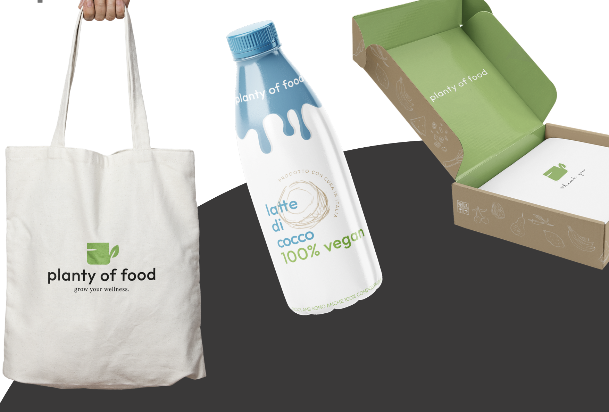
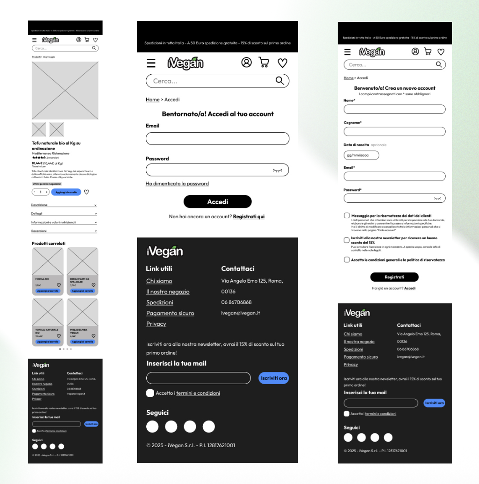
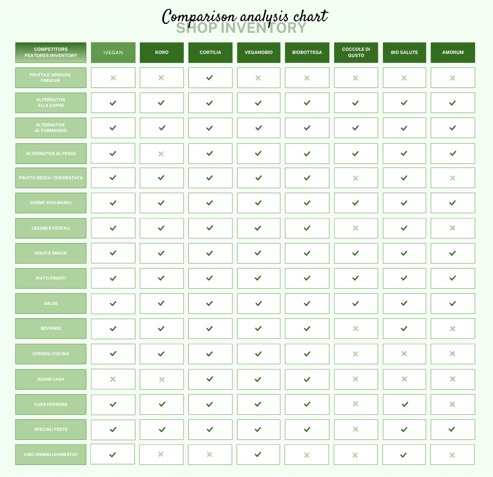

Graphics e rebranding
Redesign of a plant based e-commerce, from the logo to the typography, from the color palette to the social posts

Redesign of a plant based e-commerce, from the logo to the typography, from the color palette to the social posts

Design of responsive wireframes for iVegan, focusing on the visual hierarchy, functional layouts and user flows.

Accessibility and usability evaluation of the iVegan site, detecting cons and seggesting improvements.

Research and analysis of the user experience to improve and enrich the whole experience of the iVegan site.